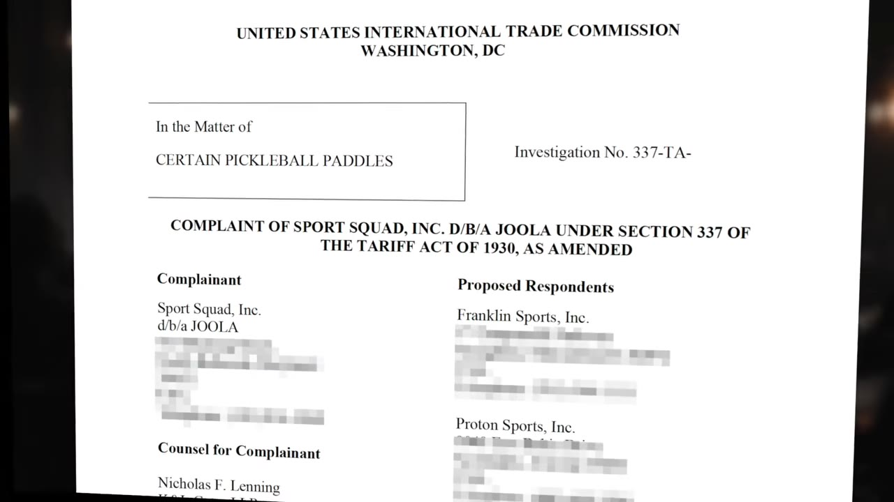
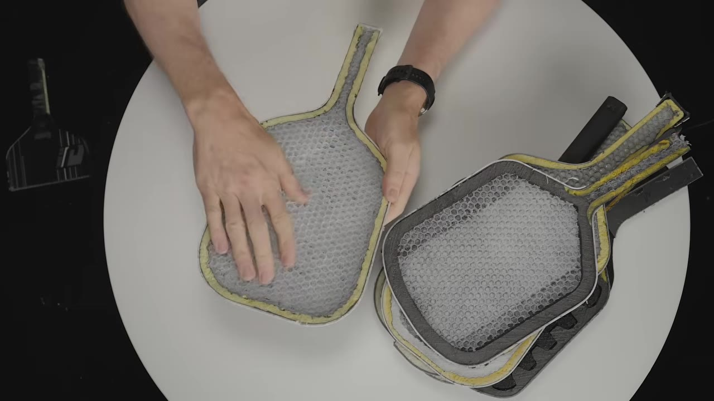
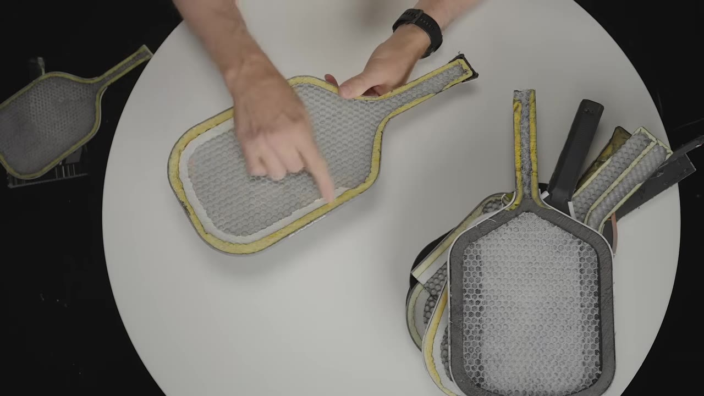
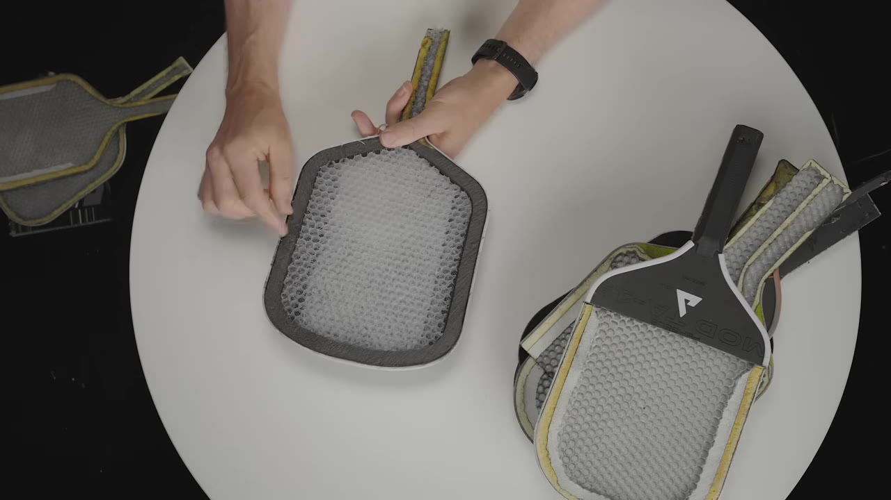
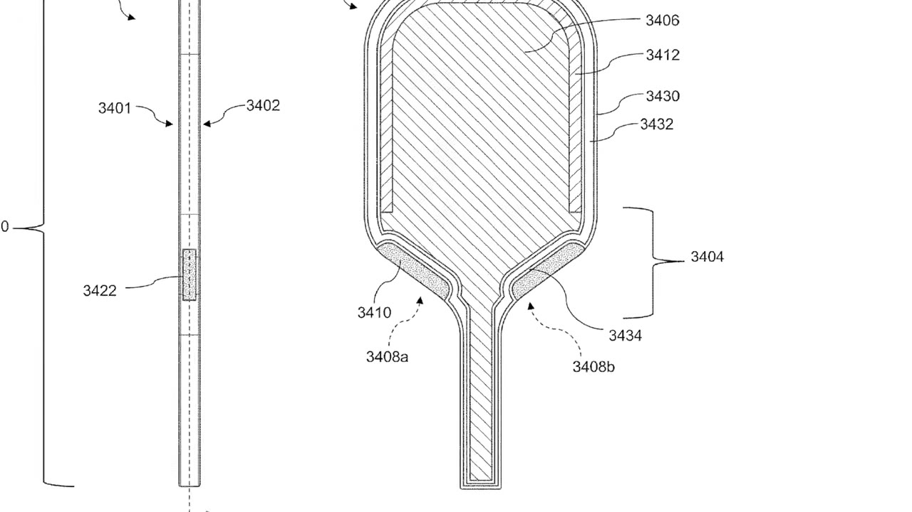
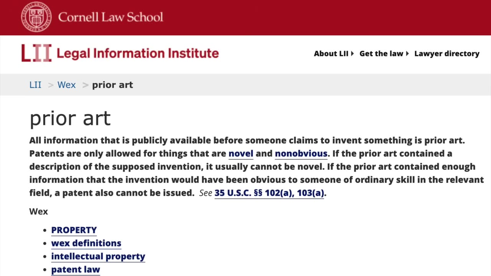

The JOOLA Pickleball Lawsuit, Decoded: What the Patents Actually Claim
Everyone assumes JOOLA's big pickleball lawsuit is about "Gen 3" paddles or banned shapes. Reading the actual patent claims — with a stack of dissected paddles for show-and-tell — Johnkew argues it's really about one specific construction detail that shows up in every accused paddle, and that the whole case may turn on prior art.
Creator: Johnkew PickleballRuntime: 10 minVideo published: April 13, 202624.4K views when summarized
The popular take — that the lawsuit is about 'Gen 3' paddles or 'diving board' shapes — misses the point. As a patent attorney told him: only the claims matter, and the claims describe a specific construction.
JOOLA filed an ITC complaint (Section 337, aimed at blocking imports, not just damages) against 11 companies, on two patents: 826 (the key one) and 891.
Patent 826 requires a layered build: a core, then a gap with TWO fillers — an inner foam (e.g., an EVA 'horseshoe') and an outer hollow carbon-fiber 'frame'/'sushi roll' that can be filled with anything, even air. Every accused paddle shares it.
What's NOT accused: paddles with a single filler running to the edge (no frame), like the Selkirk Era — and none of it hinges on whether the core 'floats.' Patent 891 is separate: internal core gaps, likely protecting the Pro 4 neck-foam inserts.
The wildcard that could decide the case: prior art — if defendants show the construction was already known, used, published, or obvious, the patents can be invalidated.
01 · The lawsuit isn't what you think
Read the claims, not the headlines
The caveat up front: he's an engineer, not an attorney. But the best advice he got from a patent attorney frames the whole video — "only focus on the claims, nothing else matters." And the claims don't say what most people assume.

JOOLA's ITC complaint, filed under Section 337 — designed to block imports, not just collect damages — naming 11 companies on two patents: the 826 and the 891.00:00:42
Everybody thinks this JOOLA lawsuit is about Gen 3 paddles, but the actual patents say something completely different.— Johnkew
02 · Show and tell
The paddle generations, sliced open
Having dissected paddles for years, he walks the cross-sections. Gen 1 (the original Franklin Ben Johns) is just one slab of honeycomb polypropylene, edge to edge — no foam. Gen 2 adds the "sushi roll" around the perimeter: a carbon-fiber tube filled with expanding edge foam.

The reveal is in the cross-section: a plain honeycomb core vs. a core ringed by a foam-filled frame.00:02:37
03 · Patent 826
The two-filler "sushi roll" structure
The key patent describes, from center out: a core, a gap, then an outer frame. The Gen 3 crux is a second filler — a white EVA-foam "horseshoe" between the core and the frame. So the claimed structure is core → first filler → second filler (the hollow frame).

Pointing out the layers on a Gen 3: core, the EVA-foam horseshoe, then the carbon-fiber frame.00:03:37
The detail nobody's discussingYou need both layers of filler to match the claims — and the frame doesn't have to contain anything specific. Even pressurized air is covered. The core also needn't be honeycomb; it "can be anything."
04 · What's in — and what's out
Single filler ≠ infringement
Every paddle in the complaint shares that two-filler pattern. Paddles with just a single filler extending to the edge — no frame — don't appear.

The Selkirk Era (left) has one softer EVA layer running core-to-edge, no expanding-foam frame — a different structure from the accused paddles.00:04:37
And, he stresses, none of this has to do with whether the core is "fully floating" — a common misconception.
05 · Patent 891
The core gaps and the neck-foam inserts
The second patent is different and more confusing: it's about modifying the inside of the core — creating gaps and filling or leaving them empty. His read: it's really protecting the Pro 4's neck-foam inserts (later branded "TFP foam inserts"), which depend on a specific ordering — the edge foam tucking inside, between the core and the neck foam.

The 891 patent figure (red arrows added): the sequence of foams around the neck is the crux of what it protects.00:08:23
06 · The wildcard
Prior art could undo it all
Even valid-looking patents can be knocked out. If defendants show the construction was already known, used, published, or simply obvious from existing technology, the claims can be invalidated.

Prior art — the factor he thinks could ultimately decide whether JOOLA's patents are enforceable at all.00:09:28
Even if JOOLA's patents are valid on paper, they can still be invalidated by the defendants if they can prove that the technology already existed.— Johnkew